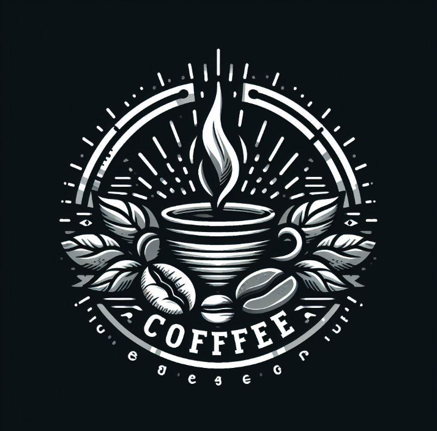

¡Bienvenidos a CoffeR!
Descubre el arte del café en cada taza en nuestra acogedora tienda de café.
Servicios Ofrecidos
En CoffeeR, ofrecemos una amplia gama de servicios diseñados para satisfacer las necesidades y los gustos de nuestros clientes más exigentes:
Variedad de Cafés: Desde espresso hasta cold brew, nuestra selección de cafés premium abarca una amplia gama de sabores y aromas para satisfacer todos los paladares.
Bebidas Especiales: Descubre nuestras deliciosas bebidas especiales, como lattes artesanales, cappuccinos cremosos y mucho más.
Productos de Café de Origen: Apoyamos a productores locales e internacionales, ofreciendo una selección de cafés de origen único con historias fascinantes detrás de cada grano.
Aperitivos y Dulces: Acompaña tu café con una selección de aperitivos frescos y dulces tentadores, preparados con ingredientes de calidad.
Espacio de Encuentro: Nuestro acogedor espacio es el lugar perfecto para reunirse con amigos, trabajar o simplemente relajarse mientras disfrutas de tu café favorito.

Propuesta Comercial
En CoffeeR, nos enorgullecemos de ofrecer una experiencia excepcional que va más allá de una simple taza de café. Nuestra propuesta comercial se centra en:
Calidad Superior: Utilizamos solo los mejores granos de café y ingredientes frescos para garantizar una experiencia de sabor inigualable en cada visita.
Servicio Personalizado: Nuestro equipo dedicado está aquí para atender tus necesidades y asegurarse de que tu experiencia en nuestra tienda sea memorable.
Ambiente Acogedor: Nuestro espacio está diseñado para brindar comodidad y calidez, invitando a nuestros clientes a quedarse y disfrutar de momentos de relajación y conexión.